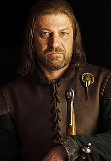

Game of trons
Description
Game of Thrones is an American fantasy drama television series created by David Benioff and D. B. Weiss for HBO. It is an adaptation of A Song of Ice and Fire, a series of fantasy novels by George R. R. Martin, the first of which is A Game of Thrones. The show was shot in the United Kingdom, Canada, Croatia, Iceland, Malta, Morocco, and Spain. It premiered on HBO in the United States on April 17, 2011, and concluding on May 19, 2019, with 73 episodes broadcast over eight seasons.
Set on the fictional continents of Westeros and Essos, Game of Thrones has a large ensemble cast and follows several story arcs throughout the course of the show. A major arc concerns the Iron Throne of the Seven Kingdoms of Westeros and follows a web of alliances and conflicts among the noble dynasties, either vying to claim the throne or fighting for independence from it. Another focuses on the last descendant of the realm's deposed ruling dynasty, who has been exiled to Essos and is plotting a return to the throne. A third story arc follows the Night's Watch, a military order defending the realm against threats from the North.
Trailer
Persons
-
Eddarn "Ned" Stark
Ned Stark (seasons 1, 6–7) portrayed by Sean Bean as an adult, Sebastian Croft as a child, and Robert Aramayo as a young adult. Eddard "Ned" Stark of House Stark, Lord of Winterfell and Warden of the North, becomes the Hand of the
-
Robert Baratheon

Robert Baratheon (season 1) portrayed by Mark Addy. Robert Baratheon of House Baratheon, formerly a fierce warrior, became King of the Seven Kingdoms after leading a rebellion against Aerys II Targaryen. He was betrothed to Ned Stark's sister Lyanna and loved her deeply, but she was kidnapped by Rhaegar Targaryen.
-
Jaime Lannister

Jaime Lannister portrayed by Nikolaj Coster-Waldau. Ser Jaime Lannister of House Lannister is a member of the Kingsguard and an exceptionally skilled swordsman. He is the Queen's twin brother and has carried on an incestuous love affair with her all his life, fathering all three of her living children.